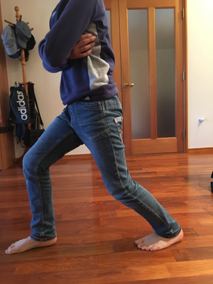
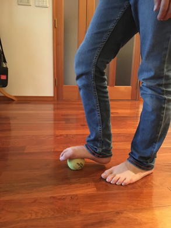
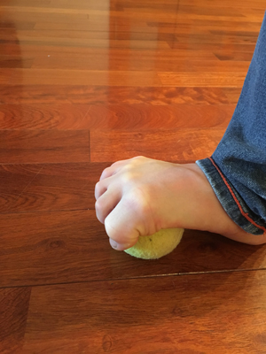
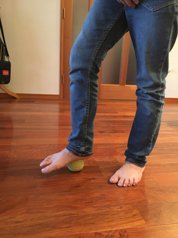

《サッカー少年に多いケガ・病気》についての覚え書き 1
サッカー少年に多いケガや病気について、
ハルの所属サッカーチームの保護者の方に
シェアした情報の覚え書きです。
チーム内の学年専用掲示板に投稿した内容デス。
↓
《以下》
最近「ひざが痛い、かかとが痛い」という声を
ときどき聞くようになりました。
小学生くらいの子どもの足の痛みは「成長痛」だろう、
で片付けられてしまうことが多いですが、
実はそうではなく、本当に炎症が起きている
「ケガ」であることも多いようです。
私は専門家ではありませんし、医療関係者でもないですが、
オタク気質(美術系にありがちな)で、知りたいことがあると
気が済むまで情報を集めて調べる性格です(汗)。
サッカーをやっている子に多く発症する病気・ケガについては
保護者の方も知っていた方がいいかと思うので、
私が調べて理解した範囲ですが、シェアしたいと思います。
※ サッカーをやっている子どもに圧倒的に多い
「シーバー病」「オスグッドシュラッター病」
「シンスプリット」についての記事を、時間があるときに
書いて順次アップしようと思っています。
※ ネット上や書籍など、情報を集めるには不自由しない世の中ですが、
専門家の間でも様々な意見があり、全く真逆のことが
推奨されていたりすることもあります。
できるだけたくさんの情報を集めて、その中で納得のできる
意見を見つけていくことが大事ではないかと思います。
もし、接骨院等にかかって、専門家にお話を聞く機会がありましたら
ぜひ積極的に皆さんにシェアしていただけるように
よろしくお願いします。
「シーバー病」
シーバー病、セーバー病、踵骨骨端症など、いろんな呼び方があります。
9才から14才頃の子どもに多いかかとの痛みで、ふくらはぎの筋肉と
足の裏の筋肉が収縮することによってかかとの骨を引っぱり、
炎症を起こす病気です。
《原因について》
シーバー病の原因となる要因については次の3点が主に上げられます。
1、柔軟性の少ない筋肉
2、かかとへの衝撃
3、土踏まずのアーチの崩れ
1、柔軟性のない筋肉
発達途中の子どもはかかとの骨が成長軟骨(柔らかい骨)で
できており、強く引っぱられ続けることで炎症を起こします。
実際には、かかとの成長軟骨につながっているふくらはぎの筋肉と足の裏の筋肉が、
運動により縮むことで、かかとをそれぞれ反対方向に引っぱります。
筋肉にある程度の柔軟性があれば、かかとを引っぱる力はそれほど強くはなりませんが、
骨の成長に伴って伸びる筋肉は、骨の成長に追いつかず
堅くなるなる傾向にあることから、かかとにより負担をかけることになり
この時期の子どもに多く発症することになります。
2、かかとへの衝撃
3、土踏まずのアーチの崩れ
成長期の子どもは13才頃までは土踏まずの形成が
未発達だと言われています。
土踏まずのアーチは地面からの衝撃を吸収する上で
重要な役割を担っており、土踏まずが未発達の状態では
地面からの衝撃を充分吸収できずに
かかとにより強い負担をかけることになります。
特にスパイクは、トレーニングシューズの4倍以上の衝撃が
足に伝わるそうです。(特に軸足はアーチが崩れやすい)
またこの他に、「足首の捻挫をしたことがある」「姿勢が悪く身体のバランスが悪い」
「股関節・ひざ関節の動きが悪く内股傾向にある」「ゲーム等のやり過ぎで自律神経が乱れている」
ことも、発症の要因となるようです。
《予防について》
主な原因の一つとなっている「柔軟性のない筋肉」を解消するため、また、
土踏まずのアーチを作るためにも、ストレッチは有効です。
筋肉は温めると柔らかくなりますので、常に冷やさないように気をつけることも
大切かと思います。
スパイクを使用する時間をできるだけ短時間にし、地面からの衝撃を和らげるための
中敷き(インソール)を使用することも有効です。
※インターネットの情報によっては、予防のためのアイシングが有効だと推奨する
記事もありますが、柔軟性が失われがちな子どもの筋肉をさらに冷やしてしまうのは
逆効果であると考えます。筋肉のアイシングに関して、一時冷やすことで血管を収縮し、
その後の拡張によって血流を増やす反熱作用というものがありますが、素人が行っても
効果的であるとは言えません。
※テーピングは筋肉の動きを補って衝撃を緩和することには効果的ですが、
正しい知識に基づいて使用しないと逆効果になる場合があります。
また、発達途中の子どもの筋肉に動きを補う、予防のための
テーピングを常に使用することは、本来の正しい筋肉の発達を
妨げることにもなりかねないので、あまりおすすめできるものではありません。
《注意事項》
予防のためのストレッチも、インソールも、発症して「かかとが痛い」状態になった場合は
行ってもほぼ効果はありません。ストレッチに関しては、痛みがある状態で行うのは逆に
悪化させる恐れがあります。炎症を起こして痛みのある部分を温めることも逆効果です。
痛みがある時はとにかく「休む」ことが大切です。シーバー病はかかとの成長軟骨の炎症が原因の
病気ですので、炎症が治まれば治ります。
炎症が治まったところで、再び発症しないようにストレッチ等で予防をすることが望ましいです。
「ストレッチの紹介」
《ふくらはぎのストレッチ》
1. 足を前後に開き立ちます。
2. 重心を前の方の足にかけ、両ひざを曲げます。


3. 後ろのかかとをゆっくり床につけます。
4. 前後の足を入れ替えて1～3を繰り返します。
※ この時、痛みが出ない程度の強さでゆっくり伸ばします。
※ 3のかかとは、必ずしも床についていなくてもOK。
《足の裏のストレッチとアーチの形成》
1. テニスボールを母指球(親指の付け根のあたり)の位置で踏みます。


※ この時、テニスボールが指の骨を広げるような位置で踏んでください。
※ 踏んでいる方の足はひざを曲げて重心は両足に均等にかかるように立ちます。


2. 次にボールをかかとと土踏まずの間の小指側で踏みます。


※ つま先は床に付けて、この時も重心は両足に均等にかかるようにします。
3. 均等に圧力をかけて、ゆっくりボールを足の裏全体で転がします。
※ 痛くない程度の圧力で、ゆっくり転がしてください。
4. もう一方の足も、同じようにしてテニスボールを踏みます。
ストレッチはお風呂から上がった直後など、身体が温まった状態の時に行うと効果的です。
身体が充分に温まるように、湯船にきちんと浸かる習慣をつけるとなおいいですね。
ストレッチは、「ゆるーく」「ゆっくり」が大切です。
くれぐれも痛みが出ない程度の強さで行ってください。
強すぎるストレッチは逆効果になります。